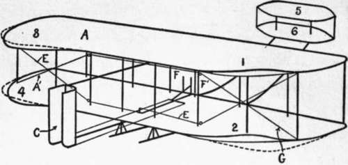
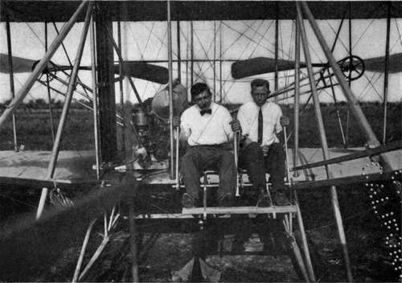
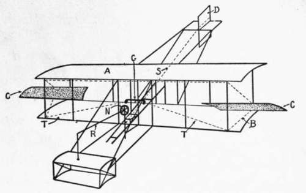
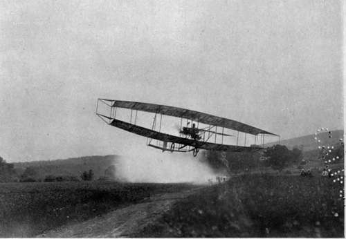
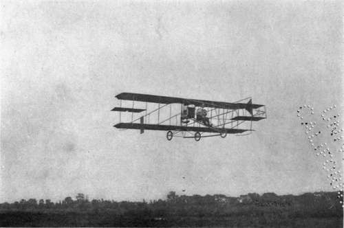

How An Aeroplane Is Balanced. Part 2
Description
This section is from the book "The New Art Of Flying", by Waldemar Kaempffert. Also available from Amazon: The New Art of Flying.
How An Aeroplane Is Balanced. Part 2
As a result of inclining the tips at opposite angles, the near side of the plane offers more resistance to the air than the far side. Hence the near side will be retarded and the far side accelerated. This will cause the entire plane to swerve from its course. It was a brilliant discovery of the Wright Brothers to correct this swerving by means of a vertical rudder E, which is thrown over to the side of least resistance — the far side in the particular instance pictured in Fig. 18. The wind pressure on the rudder exerts a counteracting force at the rear of the machine and opposes the tendency of the machine to turn. Hence the vertical rudder in flying-machines serves not nearly so much for steering as for preventing the spinning of the machine.
The actual controlling method devised by the Wrights is shown in Fig. 19. Instead of one plane, the Wrights employ two superposed planes A and A' trussed together. In front or rear is a horizontal rudder or elevator to steer the machine up or down, which rudder in the example before us (an old Wright type although the principle is the same in the new) consists of two superposed planes, 5 and 6, and which is operated by the lever F' through the medium of connecting rods. In the rear is the vertical rudder C, which serves to steer the machine from side to side and to coact with the planes A and A' in keeping the machine on its course. Instead of employing pivoted tips like those shown in Fig. 18, the Wrights warp the corners of the planes A and A'. Thus, when the corners 1 and 2 are elevated, the corners 3 and 4 are depressed. This simultaneous elevation and depression of corners is produced by a cable E, attached to a lever F'. By throwing the lever from side to side the planes are warped. The vertical rudder C is connected by tiller ropes with the same lever F', and is swung by moving the lever F' back and forth. Hence the planes are warped and the vertical rudder properly turned by the one lever F'. The photograph reproduced in Fig. 20 shows Mr. Wilbur Wright seated in his machine with his hands on the controlling levers. Fig. 21 pictures the Wright machine on the ground and shows the disposition of the main planes, horizontal or elevation rudders, and vertical rudder. Fig. 22 depicts an instruction machine with an extra lever for the pupil.
Fig. 19. The system of control on an old Wright model.
Fig. 22. A machine devised by the Wrights for the instruction of pupils.
Photograph by Tresslar.
Some of the machines which Mr. Glenn H. Curtiss has flown are similarly provided with two superposed main planes A and B, as shown in Fig. 23, with a box-like rudder in front and with a rear vertical rudder D. The front horizontal rudder is swung up or down by means of the rod R connected with the wheel N, the wheel being pushed or pulled by the pilot for that purpose. The same wheel N, when rocked like the pilot wheel of a steamboat serves to swing the vertical rudder D by drawing on one or the other of two tiller ropes, S. In his earlier machines, as, for example, the one illustrated in Fig. 24, Curtiss employed supplementary plane tips, very much like those represented in Fig. 18. In his later machines, however, one of which is shown in Fig. 25, he has transferred the tips from the sides of the main planes to positions between the main planes, beyond which they project, as indicated by the letters C C in Fig. 23. Despite the transfer their purpose still remains the same. To swing the supplementary planes C C in opposite directions, cables T T are connected with the seat-back G, which is movable from side to side and which partly encircles the pilot's body. By throwing his body from side to side the pilot swings the planes C C in opposite directions. The effect is the same as if the main planes A B were warped, as in the Wright machine. Whether or not it is necessary to throw over the vertical rudder when the balancing planes C C are swung is the question at issue in the patent infringement suit instituted by the Wright Brothers against Curtiss. The Wrights claim that Curtiss cannot fly unless the vertical rudder is operated simultaneously with the balancing planes. Curtiss claims that he can. Much testimony has been taken on both sides. A United States Circuit Judge thought that the preponderance of expert evidence was on the side of the Wrights, particularly since Curtiss himself admitted that he did sometimes use the vertical rudder to offset the swerving of the machine caused by changing the inclination of the balancing planes. A preliminary injunction was therefore issued, which, on appeal, however, was dissolved. Whether or not Curtiss can fly without simultaneously operating his vertical rudder and his balancing planes will be decided when the question of infringement is settled at the final hearing.
Fig. 23. The Curtiss system of control.
Fig. 24. Glenn H. Curtiss winning the Scientific American Trophy on July 4, 1908.
Fig. 25. Glenn H. Curtiss in one of his flying-machines, equipped with balancing-planes between the main planes.
Photograph by Edwin Levick.
In the Farman biplane, which the Wright Brothers allege likewise infringes their patent, the ailerons, as illustrated in Fig. 26, form part of the main planes A B. They are the hinged flaps D D at the rear corners of the main planes. The inclination of the ailerons D D is varied by means of cables leading to the lever C. By moving the lever C from side to side, the ailerons are moved up and down in opposite directions. To the rear of the main planes two adjustable rudders E E are placed, from which two wires lead to a tiller F operated by the pilot's feet. When the aeroplane tips to the left, for example, the pilot swings his control-lever C to the right, thus pulling down on the flaps on the left-hand side of the planes and creating more lift on that side. The right-hand flaps remain horizontal, held out by the air pressure. When the machine is at rest on the ground, the flaps hang down vertically, as shown in Fig. 27. In Fig. 28 Mr. Farman is shown seated in his biplane. His hand grasps the lever by means of which both the ailerons or flaps and the least more like the Wright machine in the mechanism for maintaining side-to-side balance. Its single supporting plane is warped at the sides by a lever and a system of cables, as shown in Fig. 30. The single supporting plane is rigidly trussed along its front edge, but a cable is attached to one rear corner at I and passes downward, and toward the centre to a pulley F (Fig. 31) actuated by a lever K, and upward forward horizontal or elevation rudder are operated.
Continue to:
- prev: Chapter V. How An Aeroplane Is Balanced
- Table of Contents
- next: How An Aeroplane Is Balanced. Part 3